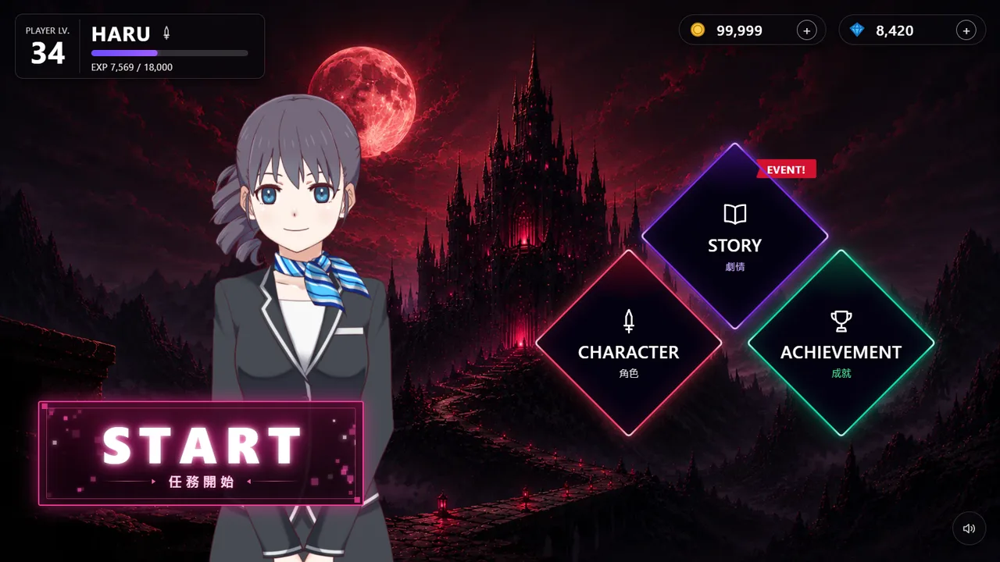
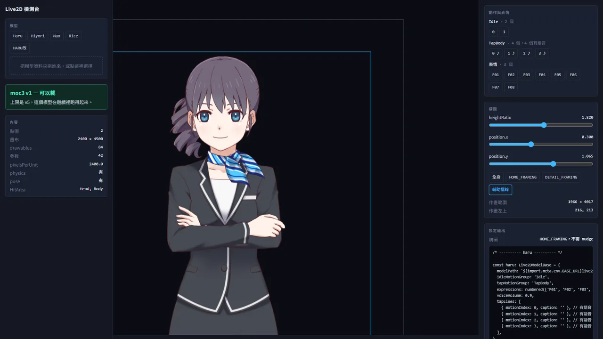
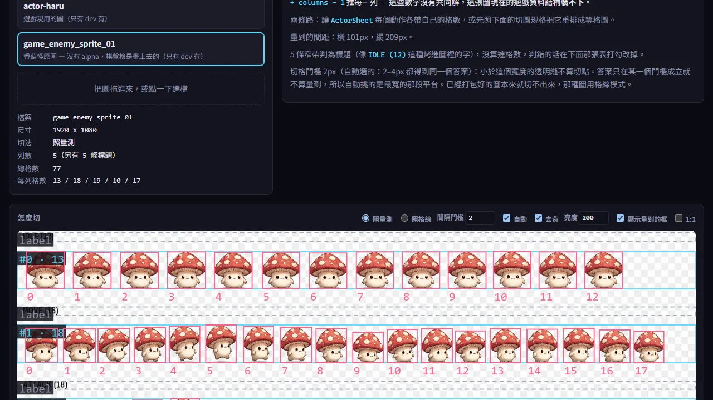

Browser Game Demo
用網頁技術做的手遊介面實驗：大廳是 Live2D 角色，戰鬥是另一顆引擎， 旁邊擺兩台工具，一台檢查模型，一台檢查精靈圖。

PixiJS + Live2D 大廳與 Phaser 戰鬥的瀏覽器 demo。

丟一個模型進去，回答它跑不跑得起來、裡面有什麼、要什麼 config。

丟一張角色圖進去，回答它切格切在哪、在遊戲的尺寸下看不看得懂、要什麼數字。